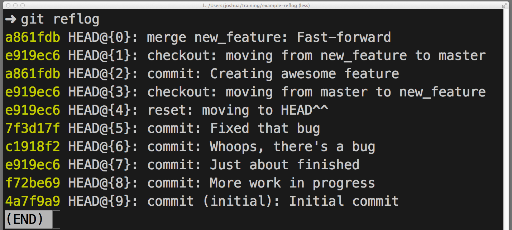
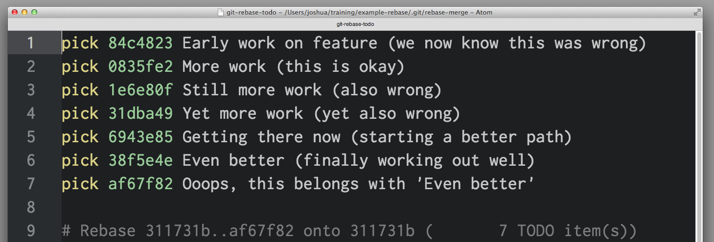
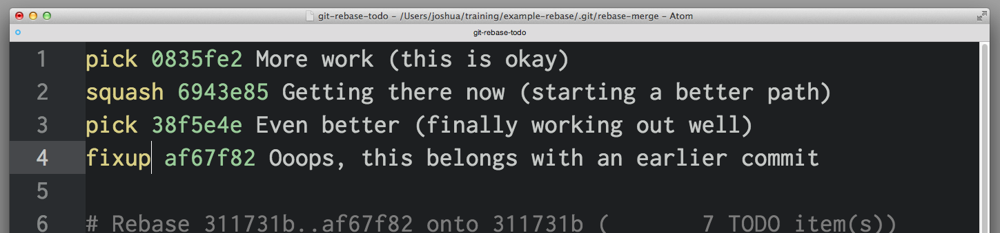
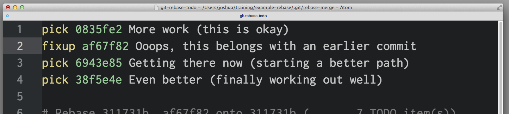
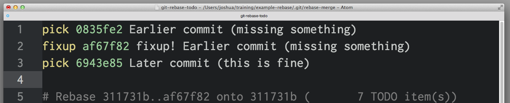

One of the most useful features of any version control system is the ability to “undo” your mistakes. In Git, “undo” can mean many slightly different things.
When you make a new commit, Git stores a snapshot of your repository at that specific moment in time; later, you can use Git to go back to an earlier version of your project.
In this post, I’m going to take a look at some common scenarios where you might want to “undo” a change you’ve made and the best way to do it using Git.
Undo a “public” change
Scenario: You just ran git push, sending your changes to GitHub, now you realize there’s a problem with one of those commits. You’d like to undo that commit.
Undo with: git revert <SHA>
What’s happening: git revert will create a new commit that’s the opposite (or inverse) of the given SHA. If the old commit is “matter”, the new commit is “anti-matter”—anything removed in the old commit will be added in the new commit and anything added in the old commit will be removed in the new commit.
This is Git’s safest, most basic “undo” scenario, because it doesn’t alter history—so you can now git push the new “inverse” commit to undo your mistaken commit.
Fix the last commit message
Scenario: You just typo’d the last commit message, you did git commit -m "Fxies bug #42" but before git push you realized that really should say “Fixes bug #42”.
Undo with: git commit --amend or git commit --amend -m "Fixes bug #42"
What’s happening: git commit --amend will update and replace the most recent commit with a new commit that combines any staged changes with the contents of the previous commit. With nothing currently staged, this just rewrites the previous commit message.
Undo “local” changes
Scenario: The cat walked across the keyboard and somehow saved the changes, then crashed the editor. You haven’t committed those changes, though. You want to undo everything in that file—just go back to the way it looked in the last commit.
Undo with: git checkout -- <bad filename>
What’s happening: git checkout alters files in the working directory to a state previously known to Git. You could provide a branch name or specific SHA you want to go back to or, by default, Git will assume you want to checkout HEAD, the last commit on the currently-checked-out branch.
Keep in mind: any changes you “undo” this way are really gone. They were never committed, so Git can’t help us recover them later. Be sure you know what you’re throwing away here! (Maybe use git diff to confirm.)
Reset “local” changes
Scenario: You’ve made some commits locally (not yet pushed), but everything is terrible, you want to undo the last three commits—like they never happened.
Undo with: git reset <last good SHA> or git reset --hard <last good SHA>
What’s happening: git reset rewinds your repository’s history all the way back to the specified SHA. It’s as if those commits never happened. By default, git reset preserves the working directory. The commits are gone, but the contents are still on disk. This is the safest option, but often, you’ll want to “undo” the commits and the changes in one move—that’s what --hard does.
Redo after undo “local”
Scenario: You made some commits, did a git reset --hard to “undo” those changes (see above), and then realized: you want those changes back!
Undo with: git reflog and git reset or git checkout
What’s happening: git reflog is an amazing resource for recovering project history. You can recover almost anything—anything you’ve committed—via the reflog.
You’re probably familiar with the git log command, which shows a list of commits. git reflog is similar, but instead shows a list of times when HEAD changed.
Some caveats:
-
HEADchanges only.HEADchanges when you switch branches, make commits withgit commitand un-make commits withgit reset, butHEADdoes not change when yougit checkout -- <bad filename>(from an earlier scenario—as mentioned before, those changes were never committed, so the reflog can’t help us recover those. -
git reflogdoesn’t last forever. Git will periodically clean up objects which are “unreachable.” Don’t expect to find months-old commits lying around in the reflog forever. - Your
reflogis yours and yours alone. You can’t usegit reflogto restore another developer’s un-pushed commits.

So… how do you use the reflog to “redo” a previously “undone” commit or commits? It depends on what exactly you want to accomplish:
- If you want to restore the project’s history as it was at that moment in time use
git reset --hard <SHA> - If you want to recreate one or more files in your working directory as they were at that moment in time, without altering history use
git checkout <SHA> -- <filename> - If you want to replay exactly one of those commits into your repository use
git cherry-pick <SHA>
Once more, with branching
Scenario: You made some commits, then realized you were checked out on master. You wish you could make those commits on a feature branch instead.
Undo with: git branch feature, git reset --hard origin/master, and git checkout feature
What’s happening: You may be used to creating new branches with git checkout -b <name>—it’s a popular short-cut for creating a new branch and checking it out right away—but you don’t want to switch branches just yet. Here, git branch feature creates a new branch called feature pointing at your most recent commit, but leaves you checked out to master.
Next, git reset --hard rewinds master back to origin/master, before any of your new commits. Don’t worry, though, they are still available on feature.
Finally, git checkout switches to the new feature branch, with all of your recent work intact.
Branch in time saves nine
Scenario: You started a new branch feature based on master, but master was pretty far behind origin/master. Now that master branch is in sync with origin/master, you wish commits on feature were starting now, instead of being so far behind.
Undo with: git checkout feature and git rebase master
What’s happening: You could have done this with git reset (no --hard, intentionally preserving changes on disk) then git checkout -b <new branch name> and then re-commit the changes, but that way, you’d lose the commit history. There’s a better way.
git rebase master does a couple of things:
- First it locates the common ancestor between your currently-checked-out branch and
master. - Then it resets the currently-checked-out branch to that ancestor, holding all later commits in a temporary holding area.
- Then it advances the currently-checked-out-branch to the end of
masterand replays the commits from the holding area aftermaster‘s last commit.
Mass undo/redo
Scenario: You started this feature in one direction, but mid-way through, you realized another solution was better. You’ve got a dozen or so commits, but you only want some of them. You’d like the others to just disappear.
Undo with: git rebase -i <earlier SHA>
What’s happening: -i puts rebase in “interactive mode”. It starts off like the rebase discussed above, but before replaying any commits, it pauses and allows you to gently modify each commit as it’s replayed.
rebase -i will open in your default text editor, with a list of commits being applied, like this:

The first two columns are key: the first is the selected command for the commit identified by the SHA in the second column. By default, rebase -i assumes each commit is being applied, via the pick command.
To drop a commit, just delete that line in your editor. If you no longer want the bad commits in your project, you can delete lines 1 and 3-4 above.
If you want to preserve the contents of the commit but edit the commit message, you use the reword command. Just replace the word pick in the first column with the word reword (or just r). It can be tempting to rewrite the commit message right now, but that won’t work—rebase -i ignores everything after the SHA column. The text after that is really just to help us remember what 0835fe2 is all about. When you’ve finished with rebase -i, you’ll be prompted for any new commit messages you need to write.
If you want to combine two commits together, you can use the squash or fixup commands, like this:

squash and fixup combine “up”—the commit with the “combine” command will be merged into the commit immediately before it. In this scenario, 0835fe2 and 6943e85 will be combined into one commit, then 38f5e4e and af67f82 will be combined together into another.
When you select squash, Git will prompt us to give the new, combined commit a new commit message; fixup will give the new commit the message from the first commit in the list. Here, you know that af67f82 is an “ooops” commit, so you’ll just use the commit message from 38f5e4e as is, but you’ll write a new message for the new commit you get from combining 0835fe2 and 6943e85.
When you save and exit your editor, Git will apply your commits in order from top to bottom. You can alter the order commits apply by changing the order of commits before saving. If you’d wanted, you could have combined af67f82 with 0835fe2 by arranging things like this:

Fix an earlier commit
Scenario: You failed to include a file in an earlier commit, it’d be great if that earlier commit could somehow include the stuff you left out. You haven’t pushed, yet, but it wasn’t the most recent commit, so you can’t use commit --amend.
Undo with: git commit --squash <SHA of the earlier commit> and git rebase --autosquash -i <even earlier SHA>
What’s happening: git commit --squash will create a new commit with a commit message like squash! Earlier commit. (You could manually create a commit with a message like that, but commit --squash saves you some typing.)
You can also use git commit --fixup if you don’t want to be prompted to write a new commit message for the combined commit. In this scenario, you’d probably use commit --fixup, since you just want to use the earlier commit’s commit message during rebase.
rebase --autosquash -i will launch an interactive rebase editor, but the editor will open with any squash! and fixup! commits already paired to the commit target in the list of commits, like so:

When using --squash and --fixup, you might not remember the SHA of the commit you want to fix—only that it was one or five commits ago. You might find using Git’s ^ and ~ operators especially handy. HEAD^ is one commit before HEAD. HEAD~4 is four commits before HEAD – or, altogether, five commits back.
Stop tracking a tracked file
Scenario: You accidentally added application.log to the repository, now every time you run the application, Git reports there are unstaged changes in application.log. You put *.log in the .gitignore file, but it’s still there—how do you tell git to to “undo” tracking changes in this file?
Undo with: git rm --cached application.log
What’s happening: While .gitignore prevents Git from tracking changes to files or even noticing the existence of files it’s never tracked before, once a file has been added and committed, Git will continue noticing changes in that file. Similarly, if you’ve used git add -f to “force”, or override, .gitignore, Git will keep tracking changes. You won’t have to use -f to add it in the future.
If you want to remove that should-be-ignored file from Git’s tracking, git rm --cached will remove it from tracking but leave the file untouched on disk. Since it’s now being ignored, you won’t see that file in git status or accidentally commit changes from that file again.
That’s how to undo anything with Git. To learn more about any of the Git commands used here, check out the relevant documentation: